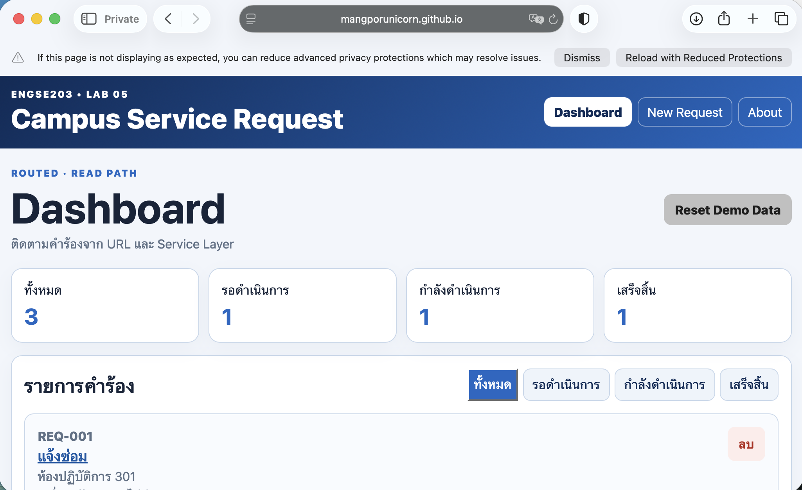
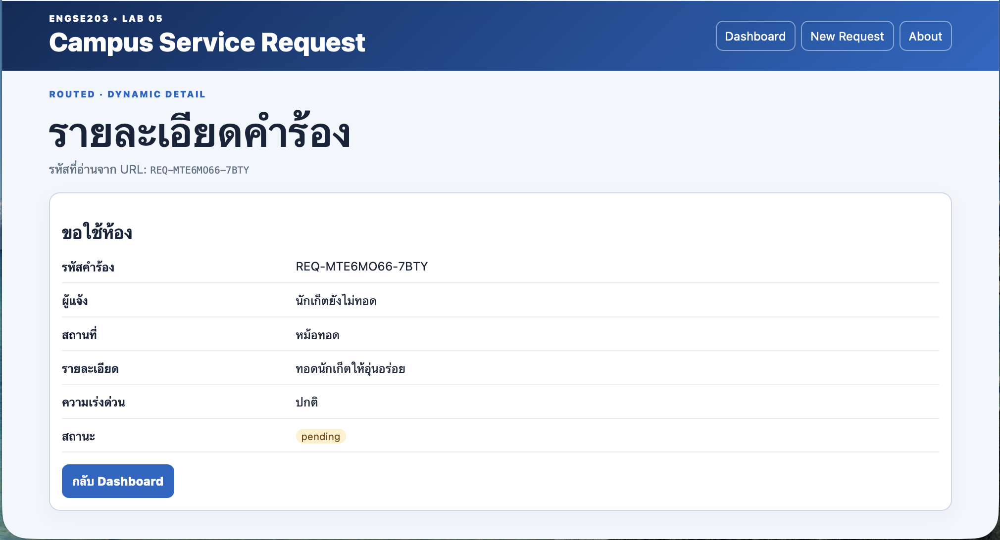
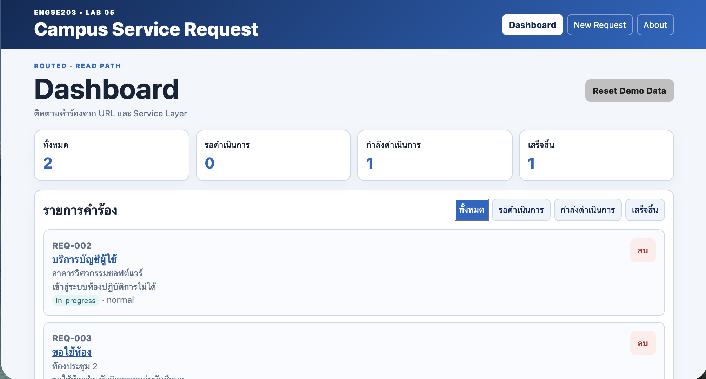
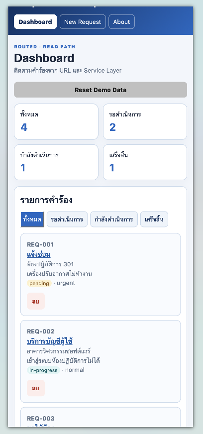
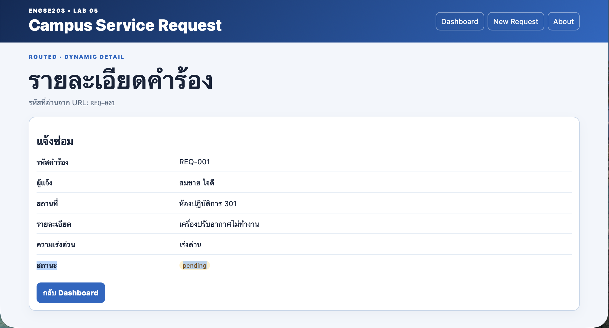
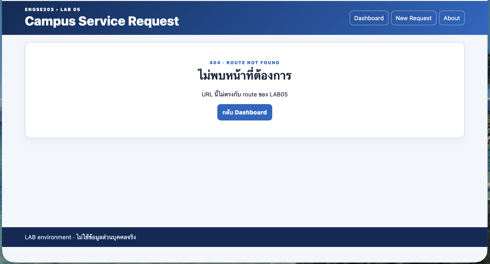
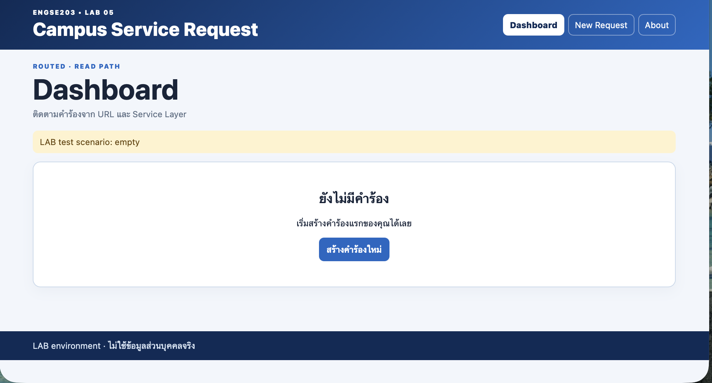
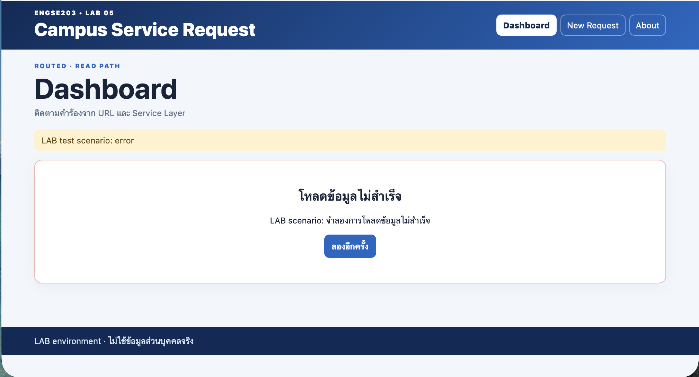
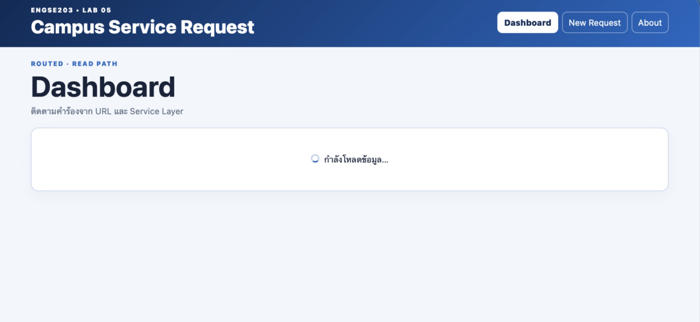
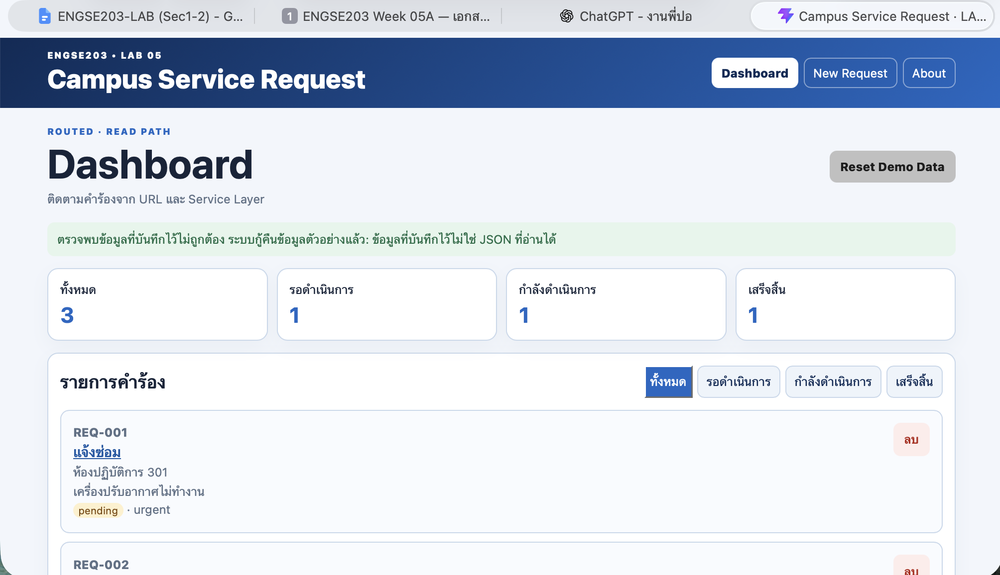

รายละเอียดผลงาน
Completed LAB05 routing, service layer, dynamic detail, localStorage persistence, recovery, regression testing, responsive UI, accessibility, and evidence.
ผลตรวจ: passVersion:
lab-05-submission-v1ภาพหลักฐาน (10)




















เอกสารและผลการทดสอบ
AI_USAGE.md
# ENGSE203 LAB05 — AI / Resource Usage | Tool / Resource | Purpose | Used portion | How I verified | My final decision | | --------------- | --------------------------------------------- | ------------------------------------------------------------------------------------------------------- | --------------------------------------------------------------------------------------------------------------------------------------- | -------------------------------------------------- | | ChatGPT | ช่วยอธิบายโจทย์และตรวจสอบการ Refactor ใน CP01 | การย้าย state, handlers และ Dashboard UI จาก `App.jsx` ไป `DashboardPage.jsx` รวมถึงตรวจสอบ import path | ตรวจ source code ด้วยตนเอง, ทดสอบ Add / Filter / Delete / Validation ใน browser, รัน `npm run check -- --session=1` และ `npm run build` | นำแนวทางที่เข้าใจและตรวจสอบแล้วมาแก้โค้ดในโปรเจกต์ | | ChatGPT | ช่วยอธิบายและตรวจสอบ CP02 Routing | AppLayout, nested Routes, Outlet และ NavLink | ทดสอบ route ใน browser, รัน checker และ build | ใช้แนวทางหลังตรวจสอบว่าตรงกับเอกสาร LAB05 | | ChatGPT | ช่วยอธิบายและตรวจสอบ CP05a Dynamic Detail | getRequestById, useParams, useEffect และสถานะ found/not found | ตรวจ source, รัน checker, manual test REQ-001/REQ-999 และ npm run build | ใช้แนวทางหลังตรวจสอบกับเอกสาร LAB05 และทดสอบด้วยตนเอง | | ChatGPT | ช่วยอธิบายและตรวจสอบ CP04b Recovery | schemaVersion validation, duplicate ID validation และ recovery callback | รัน npm run check, ทดสอบ Local Storage เสียใน browser และ npm run build | ใช้แนวทางหลังตรวจสอบกับ LAB05 และทดสอบด้วยตนเอง | คำรับรอง: * [x] ไม่ส่ง token, password, secret หรือข้อมูลส่วนบุคคลจริงให้เครื่องมือ * [x] ตรวจ source และรัน test ด้วยตนเอง * [ ] อธิบาย Route, Effect, Service Layer และ persistence ของ final code ได้
REGRESSION_CHECKLIST.md
# ENGSE203 LAB 05 — Regression Checklist **ใช้ใน CP05b · คาบ 5B · 30 นาที** **รูปแบบ:** จับคู่ทดสอบไขว้ — A ทดสอบงานของ B และ B ทดสอบงานของ A --- **เจ้าของงาน:** ปริยากร ธารพรศรี **ผู้ทดสอบ:** นภัทรประภา กุลสุทธิเสถียร **วันที่:** 29/AUG/2026 **เบราว์เซอร์:** Safari --- ## ทำไมต้องมีใบนี้ สองสัปดาห์ที่ผ่านมาเราแก้โค้ดของ Week 04 ไปเยอะมาก — ย้ายไฟล์ เปลี่ยนแหล่งข้อมูล เพิ่มชั้นใหม่ เปลี่ยนวิธีลบ ความสามารถที่เคยทำงานได้ แล้ว*พังเพราะการแก้ครั้งใหม่* เรียกว่า **regression** > **ฟีเจอร์ใหม่ทำงานแต่ของเดิมพัง = ยังไม่สำเร็จ** `npm run check` ตรวจเรื่องนี้ไม่ได้เลย ต้องใช้ตาดูอย่างเดียว --- ## กติกาการจับคู่ทดสอบ | ข้อ | กติกา | |---|---| | 1 | **ผู้ทดสอบเป็นคนกรอกใบนี้** ไม่ใช่เจ้าของงาน | | 2 | เจ้าของงาน**ห้ามแตะคีย์บอร์ด**ระหว่างถูกทดสอบ | | 3 | เจอปัญหาให้**จดไว้ก่อน** อย่าเพิ่งหยุดแก้ — ทดสอบให้ครบทั้ง 11 ข้อก่อน | | 4 | เจ้าของงานอธิบายได้ แต่ห้ามบอกว่า "ต้องกดตรงนี้ก่อน" — ถ้าผู้ทดสอบหาไม่เจอ นั่นคือข้อมูลสำคัญ | > **ทำไมทดสอบงานคนอื่นถึงได้ผลกว่า** — เพราะไม่มีอคติว่า "ตรงนี้ฉันเขียนเองน่าจะถูก" และเป็นการฝึกทักษะ code review ที่จะใช้จริงในการทำงาน --- ## เตรียมก่อนเริ่ม ```bash cd labs/week-05/source npm run dev ``` จากนั้นกดปุ่ม **Reset Demo Data** เพื่อให้เริ่มจากข้อมูลตัวอย่างชุดเดียวกัน --- ## Checklist 11 ข้อ ### กลุ่มที่ 1 · การแสดงผล **ข้อ 1 · เปิดหน้า Dashboard** เปิด `#/` แล้วดู - ☑ ผ่าน ☐ ไม่ผ่าน ควรเห็น — แผงสรุปพร้อมตัวเลข 4 ค่า และรายการคำร้อง สิ่งที่เห็นจริง: Dashboard แสดงแผงสรุปจำนวนคำร้องทั้ง 4 ค่า และแสดงรายการคำร้องได้ตามปกติ โดยไม่มีข้อผิดพลาดบนหน้าจอ --- **ข้อ 2 · ส่งฟอร์มเปล่า** ไปหน้า New Request แล้วกดบันทึกโดยไม่กรอกอะไรเลย - ☑ ผ่าน ☐ ไม่ผ่าน ควรเห็น — ข้อความเตือนใต้ช่องกรอก **ทุกช่อง** และ **ไม่มี** ข้อความภาษาโปรแกรมเมอร์อย่าง `TypeError` สิ่งที่เห็นจริง: เมื่อกดบันทึกโดยไม่กรอกข้อมูล ระบบแสดงข้อความ Validation ใต้ช่องที่จำเป็นต้องกรอก และไม่พบ TypeError หรือข้อความผิดพลาดทางเทคนิคบนหน้าจอ --- **ข้อ 3 · ส่งฟอร์มที่กรอกไม่ครบบางช่อง** กรอกชื่อกับสถานที่ แต่ใส่รายละเอียดสั้นกว่า 10 ตัวอักษร แล้วกดบันทึก - ☑ ผ่าน ☐ ไม่ผ่าน ควรเห็น — เตือน **เฉพาะช่องรายละเอียด** ช่องที่กรอกถูกแล้วไม่ควรขึ้นเตือน สิ่งที่เห็นจริง: เมื่อกรอกข้อมูลส่วนอื่นถูกต้อง แต่รายละเอียดสั้นกว่า 10 ตัวอักษร ระบบแสดงคำเตือนเฉพาะช่องรายละเอียด ส่วนช่องที่กรอกถูกต้องไม่มีข้อความเตือน --- ### กลุ่มที่ 2 · การเพิ่มและลบ **ข้อ 4 · เพิ่มคำร้องที่กรอกครบ** กรอกครบทุกช่องแล้วกดบันทึก - ☑ ผ่าน ☐ ไม่ผ่าน ควรเห็น — บันทึกสำเร็จ เด้งไปหน้ารายละเอียด **และเห็นข้อมูลที่เพิ่งกรอกจริง** รหัสที่ได้: `REQ-MTELV7YI-2YWT` (กรอกรหัสจริงที่ระบบสร้าง) สิ่งที่เห็นจริง: ระบบสร้างคำร้องใหม่สำเร็จและเปลี่ยนไปยังหน้ารายละเอียดของคำร้องที่สร้าง โดยข้อมูลผู้แจ้ง ประเภท สถานที่ รายละเอียด ความเร่งด่วน และสถานะตรงกับข้อมูลที่กรอก --- **ข้อ 8 · ลบคำร้อง** กลับไป Dashboard แล้วลบคำร้องที่เพิ่งเพิ่ม - ☑ ผ่าน ☐ ไม่ผ่าน ควรเห็น — หายจากรายการทันที และมีข้อความยืนยัน สิ่งที่เห็นจริง: หลังจากกดลบ คำร้องที่เลือกหายออกจากรายการทันที และระบบแสดงข้อความยืนยันว่าลบคำร้องเรียบร้อยแล้ว --- ### กลุ่มที่ 3 · ตัวกรอง **ข้อ 5 · กรอง pending** - ☑ ผ่าน ☐ ไม่ผ่าน จำนวนที่เห็น: `1` รายการ ตรงกับตัวเลข pending ในแผงสรุปหรือไม่ ☑ ตรง ☐ ไม่ตรง สิ่งที่เห็นจริง: เมื่อเลือกตัวกรอง pending ระบบแสดงเฉพาะคำร้องที่มีสถานะ pending และจำนวนรายการที่เห็นตรงกับค่า pending ในแผงสรุป --- **ข้อ 6 · กรอง in-progress และ completed** - ☑ ผ่าน ☐ ไม่ผ่าน in-progress: `1` รายการ completed: `1` รายการ สิ่งที่เห็นจริง: เมื่อเลือกตัวกรอง in-progress ระบบแสดงเฉพาะรายการสถานะ in-progress และเมื่อเลือก completed ระบบแสดงเฉพาะรายการสถานะ completed โดยจำนวนรายการตรงกับข้อมูลที่แสดงในแผงสรุป --- **ข้อ 7 · กลับมา all** - ☑ ผ่าน ☐ ไม่ผ่าน ควรเห็น — รายการครบเหมือนตอนเริ่ม จำนวนที่เห็น: `3` รายการ สิ่งที่เห็นจริง: เมื่อเลือกตัวกรอง all ระบบกลับมาแสดงคำร้องทุกสถานะ และจำนวนรายการกลับมาตรงกับจำนวนทั้งหมดในแผงสรุป --- ### กลุ่มที่ 4 · ความสอดคล้องของข้อมูล **ข้อ 9 · แผงสรุปตรงกับรายการจริง** ⚠ ข้อที่พังบ่อยที่สุด ทำตามลำดับนี้แล้วเทียบตัวเลขทุกครั้ง | ขั้น | ทำอะไร | total ในแผงสรุป | นับรายการด้วยตา | ตรงกัน | |---|---|---:|---:|---| | 1 | ตอนเริ่ม | `3` | `3` | ☑ | | 2 | เพิ่ม 1 คำร้อง | `4` | `4` | ☑ | | 3 | เพิ่มอีก 1 คำร้อง | `5` | `5` | ☑ | | 4 | ลบ 1 คำร้อง | `4` | `4` | ☑ | - ☑ ผ่านทุกขั้น ☐ ไม่ผ่าน > **ทำไมข้อนี้พังบ่อย** — หลายคนลืมอัปเดต state หลังเรียก service · ลบสำเร็จใน storage แต่หน้าจอไม่เปลี่ยน หรือเปลี่ยนแต่แผงสรุปยังเป็นตัวเลขเก่า สิ่งที่เห็นจริง: หลังเพิ่มและลบคำร้องตามลำดับ ค่า total ในแผงสรุปเปลี่ยนตามจำนวนข้อมูลจริงทุกครั้ง และจำนวนในแผงสรุปตรงกับจำนวนรายการที่นับจากหน้าจอในทุกขั้นตอน --- **ข้อ 10 · หน้ารายละเอียดตรงกับที่กรอก** เพิ่มคำร้องใหม่แล้วเปิดหน้ารายละเอียดของมัน - ☑ ผ่าน ☐ ไม่ผ่าน ตรวจทีละช่อง — ☑ ชื่อผู้แจ้ง ☑ ประเภท ☑ สถานที่ ☑ รายละเอียด ☑ ความเร่งด่วน ☑ สถานะเป็น `pending` สิ่งที่เห็นจริง: หน้ารายละเอียดแสดงชื่อผู้แจ้ง ประเภทคำร้อง สถานที่ รายละเอียด และความเร่งด่วนตรงกับข้อมูลที่กรอกไว้ และสถานะเริ่มต้นของคำร้องเป็น pending --- ### กลุ่มที่ 5 · การคืนค่า **ข้อ 11 · Reset Demo Data** กดปุ่ม Reset แล้วยืนยัน - ☑ ผ่าน ☐ ไม่ผ่าน ควรเห็น — ข้อมูลตัวอย่างกลับมาครบ · **ตัวกรองรีเซ็ตเป็น all** · มีข้อความยืนยัน สิ่งที่เห็นจริง: เมื่อกด Reset Demo Data และยืนยัน ระบบคืนข้อมูลกลับเป็นชุดตัวอย่างเริ่มต้น ตัวกรองกลับเป็น all และมีข้อความแจ้งว่าคืนค่าข้อมูลตัวอย่างเรียบร้อยแล้ว --- ## สรุปผลการทดสอบ | | จำนวน | |---|---:| | ผ่าน | `___ / 11` | | ไม่ผ่าน | `___` | **ข้อที่ไม่ผ่าน และอาการที่พบ** ถ้าผ่านทั้งหมด: `ไม่พบข้อที่ไม่ผ่านจากการทดสอบทั้ง 11 ข้อ` ถ้ามีข้อไม่ผ่าน: `ข้อ ___ : ________________________________________________` **ข้อสังเกตอื่นจากผู้ทดสอบ** *(สิ่งที่ไม่ได้อยู่ใน checklist แต่รู้สึกว่าแปลก)* ถ้าไม่พบ: `ไม่พบความผิดปกติอื่นนอกเหนือจากรายการใน Checklist` หรือถ้ามี: `________________________________________________________` --- **ลงชื่อผู้ทดสอบ:** นภัทรประภา กุลสุทธิเสถียร **เจ้าของงานรับทราบ:** ปริยากร ธารพรศรี --- ## หลังทดสอบเสร็จ 1. เจ้าของงานนำใบนี้ไปแก้ทีละข้อ 2. แก้เสร็จแล้ว **ให้ผู้ทดสอบคนเดิมทดสอบซ้ำ** เฉพาะข้อที่เคยไม่ผ่าน 3. กรอกผลลง `TEST_REPORT.md` — TC-L5-13, TC-L5-15, TC-L5-16, TC-L5-19 4. **บันทึกตามจริง** ถ้ายังแก้ไม่ทันให้เขียนว่า `FAIL` พร้อมเหตุผล > การยอมรับว่ายังไม่เสร็จ ดีกว่าการเขียนว่าเสร็จ — และผู้สอนตรวจได้ว่าอันไหนจริง
TEST_REPORT.md
# ENGSE203 LAB 05 — รายงานผลการทดสอบ
**ชื่อ–รหัส:** ปริยากร ธารพรศรี 68543210078-0
**Branch:** `lab/week-05` · **Commit:** ______________________
**ระบบปฏิบัติการ:** macOS · **เบราว์เซอร์:** Safari
**Node version (`node -v`):** v22.23.1
**วันที่ทดสอบ:** 28/02/2026
---
## วิธีกรอก — อ่านก่อนเริ่ม
| ช่อง | กรอกอะไร |
|---|---|
| **ผลจริง** | สิ่งที่<strong>เห็นจริง</strong>บนหน้าจอ ไม่ใช่สิ่งที่ควรเห็น |
| **สถานะ** | `PASS` · `FAIL` · `NOT RUN` |
| **หลักฐาน** | ชื่อไฟล์ภาพหรือหมายเหตุเพิ่มเติม |
> **ถ้าทดสอบแล้วไม่ผ่าน ให้เขียน `FAIL` พร้อมสิ่งที่เห็นจริง** อย่าเขียนว่าผ่านทั้งที่ยังไม่ได้ทดสอบ
>
> รายงานที่เขียนย้อนหลังจะเป็น `PASS` ทั้งหมดเสมอ ซึ่งไม่มีคุณค่าอะไรเลย · ในการทำงานจริง รายงานแบบนี้คือสิ่งที่ทำให้คนอื่นเชื่อได้ว่างานของคุณผ่านการตรวจสอบมาแล้ว
>
> **กรอกทีละ checkpoint** อย่ากองไว้ทำทีเดียวตอนท้าย เพราะพอถึงตอนนั้นคุณจะจำไม่ได้แล้วว่าเห็นอะไร
**เงื่อนไขเริ่มต้นของทุกข้อ** — รัน `npm run dev` แล้วเปิด URL ที่แสดง เว้นแต่ระบุเป็นอย่างอื่น
---
## คาบ 5A · CP02 — Routing
| ID | ทำอะไร | ผลที่ควรได้ | ผลจริง | สถานะ | หลักฐาน |
|---|---|---|---|---|---|
| **TC-L5-01** | เปิด `#/` | Dashboard แสดงแผงสรุปและรายการคำร้อง | Dashboard แสดงแผงสรุปและรายการคำร้องได้ตามปกติ | PASS | |
| **TC-L5-02** | กดเมนู Dashboard → New Request → About ทีละปุ่ม · เปิด DevTools แท็บ Network ค้างไว้ | เปลี่ยนหน้าทั้ง 3 ครั้ง · **ไม่มีไฟล์ `.html` ถูกโหลดใหม่** · ปุ่มที่ active ตรงกับหน้าปัจจุบัน | เปลี่ยนหน้า Dashboard, New Request และ About ได้โดยไม่ reload HTML และเมนู active ถูกต้อง | PASS | |
| **TC-L5-03** | เปิด `#/requests/new` แล้วกด `F5` | หลัง refresh ยังอยู่หน้า New Request ไม่ใช่หน้า 404 | Refresh ที่ #/requests/new แล้วหน้า New Request ยังแสดงและไม่เกิด 404 | PASS | |
| **TC-L5-06** | เปิด `#/unknown` | หน้า NotFound **พร้อม header และ footer** + ลิงก์กลับ Dashboard | #/unknown แสดงหน้า Not Found พร้อม Header และ Footer | PASS | `images/route-not-found.png` |
---
## คาบ 5A · CP03 — Service และ Data Lifecycle
| ID | ทำอะไร | ผลที่ควรได้ | ผลจริง | สถานะ | หลักฐาน |
|---|---|---|---|---|---|
| **TC-L5-08** | เปิด `#/` แล้วสังเกตช่วงแรก · ถ้าถ่ายไม่ทันให้ตั้ง Network throttle เป็น Slow 3G | เห็นตัวบอกว่ากำลังโหลดก่อน แล้วรายการจึงขึ้น | แสดงสถานะกำลังโหลดก่อน แล้วจึงแสดงรายการคำร้อง | PASS | `images/state-loading.png` |
| **TC-L5-09** | เปิด `#/?scenario=error` | แถบบอกว่าอยู่ในโหมดทดสอบ + ข้อความผิดพลาดที่คนทั่วไปเข้าใจ + ปุ่มลองอีกครั้ง · **ไม่มี stack trace** | แสดงโหมดทดสอบ error พร้อมข้อความผิดพลาดและปุ่มลองอีกครั้ง โดยไม่มี stack trace | PASS | `images/state-error-retry.png` |
| **TC-L5-10** | จากข้อ 09 กดปุ่มลองอีกครั้ง | **URL เปลี่ยนกลับเป็น `#/`** แล้วโหลดรายการปกติ | เมื่อกดปุ่มลองอีกครั้ง URL กลับเป็น #/ และรายการคำร้องโหลดได้ตามปกติ | PASS | |
| **TC-L5-11** | เปิด `#/?scenario=empty` | ข้อความว่ายังไม่มีคำร้อง + ปุ่มไปหน้าสร้างใหม่ · **ไม่ใช่หน้าจอ error** | แสดงข้อความว่ายังไม่มีคำร้องและปุ่มสร้างคำร้องใหม่ โดยไม่แสดงหน้าจอ error | PASS | `images/state-empty.png` |
| **TC-L5-15** | เปลี่ยนตัวกรองครบทุกค่า — all, pending, in-progress, completed | รายการเปลี่ยนถูกต้องทุกค่า · **แผงสรุปไม่เปลี่ยน** เพราะนับจากข้อมูลทั้งหมด | ตัวกรอง all, pending, in-progress และ completed แสดงรายการถูกต้อง และแผงสรุปไม่เปลี่ยน | PASS | |
---
## คาบ 5A · CP05a — Dynamic Detail
| ID | ทำอะไร | ผลที่ควรได้ | ผลจริง | สถานะ | หลักฐาน |
|---|---|---|---|---|---|
| **TC-L5-04** | เปิด `#/requests/REQ-001` | แสดงรายละเอียดที่ตรงกับรหัสนั้น | หน้า Detail แสดงข้อมูลคำร้อง REQ-001 ตรงกับรหัสที่ระบุใน URL | PASS | `images/route-detail-found.png` |
| **TC-L5-05** | เปิด `#/requests/REQ-999` | ข้อความว่าไม่พบคำร้องรหัสนั้น + ลิงก์กลับ · **อยู่ในหน้า Detail ไม่ใช่หน้า NotFound และไม่ใช่หน้าจอ error** | แสดงข้อความว่าไม่พบคำร้อง REQ-999 พร้อมลิงก์กลับ โดยยังอยู่ในหน้า Detail และไม่แสดง Error State | PASS | |
---
## คาบ 5B · CP04a — Persistence
| ID | ทำอะไร | ผลที่ควรได้ | ผลจริง | สถานะ | หลักฐาน |
|---|---|---|---|---|---|
| **TC-L5-07** | DevTools → Application → Local Storage → ลบคีย์ `engse203-campus-requests-v1` → refresh | ข้อมูลตัวอย่างกลับมา และคีย์ถูกสร้างใหม่พร้อม envelope · **ไม่มีข้อความแจ้งว่ากู้ข้อมูล** เพราะเป็นการเปิดครั้งแรก | เมื่อลบคีย์ LAB05 แล้ว refresh ข้อมูลตัวอย่างถูกโหลดและสร้างคีย์ใหม่พร้อม envelope โดยไม่มีข้อความ recovery | PASS | |
| **TC-L5-13** | ส่งฟอร์มโดยเว้นบางช่อง แล้วลองใส่รายละเอียดสั้นกว่า 10 ตัวอักษร | ข้อความเตือนใต้ช่องที่ผิด · **ไม่ใช่ `TypeError` หรือข้อความภาษาโปรแกรมเมอร์** | ฟอร์มแสดงข้อความ validation ใต้ช่องที่ไม่ถูกต้อง รวมถึงรายละเอียดสั้นกว่า 10 ตัวอักษร โดยไม่เกิด TypeError | PASS | |
| **TC-L5-14** | เพิ่มคำร้องที่กรอกครบ → เด้งไปหน้ารายละเอียด → กด `F5` | บันทึกสำเร็จ · **หน้ารายละเอียดแสดงข้อมูลจริง** · refresh แล้วคำร้องยังอยู่ | เพิ่มคำร้องสำเร็จและเข้าสู่หน้า Detail หลัง refresh ข้อมูลคำร้องยังแสดงอยู่ | PASS | `images/persistence-add-refresh.png` |
| **TC-L5-16** | ลบคำร้องที่เพิ่งเพิ่ม → กด `F5` | หายจากรายการทันที และ **refresh แล้วไม่กลับมา** | คำร้องถูกลบออกจากรายการ และหลัง refresh คำร้องไม่กลับมา | PASS | `images/persistence-delete-refresh.png` |
| **TC-L5-17** | กดปุ่ม Reset Demo Data → ยืนยัน | ข้อมูลตัวอย่างกลับมาครบ · ตัวกรองรีเซ็ตเป็น all · **ข้อมูลของเว็บอื่นในโดเมนเดียวกันไม่ถูกลบ** | เมื่อยืนยัน Reset Demo Data ข้อมูลกลับเป็นชุดตัวอย่าง ตัวกรองกลับเป็น all และ refresh แล้วยังคงเป็นข้อมูลชุดตัวอย่าง | PASS | |
---
## คาบ 5B · CP04b — Recovery
| ID | ทำอะไร | ผลที่ควรได้ | ผลจริง | สถานะ | หลักฐาน |
|---|---|---|---|---|---|
| **TC-L5-18a** | ใน Local Storage วางค่า `{ ไม่ใช่ JSON` ทับคีย์ LAB05 → refresh | กู้ข้อมูลตัวอย่าง + **ข้อความแจ้งผู้ใช้** · ไม่มีหน้าจอขาว ไม่มี error ค้างใน Console | เมื่อ Local Storage มี JSON ที่เสีย ระบบกู้ข้อมูลตัวอย่างกลับมาและแสดงข้อความแจ้งผู้ใช้ โดยหน้าเว็บยังทำงานตามปกติ
| PASS | `images/storage-recovery.png` |
| **TC-L5-18b** | วางค่า `{"schemaVersion":99,"requests":[]}` → refresh | กู้ได้เหมือนกัน · **จับด้วยการเทียบ SCHEMA_VERSION ไม่ใช่ try/catch** | เมื่อ schemaVersion เป็น 99 ระบบตรวจพบ version ไม่ตรง กู้ข้อมูลตัวอย่างและแจ้งผู้ใช้ได้ | PASS | |
| **TC-L5-18c** | วาง envelope ที่มีคำร้อง `id` ซ้ำกัน 2 รายการ → refresh | กู้ได้เหมือนกัน · จับด้วย `validateRequests()` | เมื่อข้อมูลมี request ID ซ้ำ ระบบตรวจพบด้วย validateRequests() กู้ข้อมูลตัวอย่างและแจ้งผู้ใช้ | PASS | |
---
## คาบ 5B · CP05b — Regression จาก Week 04
> ใช้ regression checklist 11 ข้อประกอบ · แนะนำให้จับคู่ทดสอบไขว้
| ID | ทำอะไร | ผลที่ควรได้ | ผลจริง | สถานะ | หลักฐาน |
|---|---|---|---|---|---|
| **TC-L5-19** | เพิ่มและลบคำร้องหลายรอบ แล้วเทียบตัวเลขในแผงสรุปกับจำนวนรายการที่นับด้วยตา | **ตัวเลขตรงกันทุกครั้ง** ทั้ง total, pending, in-progress, completed | หลังเพิ่มและลบคำร้องหลายรอบ ค่า total, pending, in-progress และ completed ในแผงสรุปตรงกับจำนวนรายการที่แสดงจริงทุกครั้ง | PASS | `REGRESSION_CHECKLIST.md` |
*(TC-L5-13, 15, 16 รันซ้ำในช่วงนี้ด้วย — บันทึกไว้ในตารางของ CP04a ได้เลย ถ้าผลต่างจากเดิมให้เขียนกำกับ)*
---
## คาบ 5B · CP06 — Verify และ Delivery
| ID | ทำอะไร | ผลที่ควรได้ | ผลจริง | สถานะ | หลักฐาน |
|---|---|---|---|---|---|
| **TC-L5-20** | DevTools → Toggle device toolbar → ตั้งความกว้าง 375px → เปิดครบทุกหน้า | ไม่มีการเลื่อนแนวนอน · ปุ่มกดได้ไม่ทับกัน · ข้อความไม่ถูกตัด | ทดสอบทุกหน้าที่ความกว้าง 375px แล้ว ไม่พบการเลื่อนแนวนอน ปุ่มและองค์ประกอบไม่ทับกัน และข้อความแสดงได้ครบ | PASS | `images/responsive-375.png` |
| **TC-L5-21** | วางเมาส์ไว้ข้าง ๆ ใช้ `Tab` `Shift+Tab` `Enter` `Space` เท่านั้น | เข้าถึงทุกลิงก์ ปุ่ม และช่องกรอกได้ · **เห็นชัดตลอดว่าโฟกัสอยู่ที่ไหน** | สามารถใช้ Tab และ Shift+Tab เข้าถึงลิงก์ ปุ่ม ตัวกรอง และช่องกรอกได้ครบ ใช้ Enter/Space สั่งงานได้ และมีกรอบแสดงตำแหน่งโฟกัสชัดเจนตลอดการทดสอบ | PASS | |
| **TC-L5-12** | `npm run check` | ผ่าน **133/133** | Checker ทำงานสำเร็จและผ่านครบ 133/133 รายการ | PASS | 133/133 |
| **TC-L5-22** | `npm run build` แล้ว `npm run preview` | build ไม่มี error · เปิด preview แล้ว refresh ที่ทุก URL ได้ | Build สำเร็จโดยไม่มี error และทดสอบ refresh ทุก route บน preview แล้วสามารถเปิดได้ตามปกติโดยไม่เกิด 404 | PASS | |
| **TC-L5-23** | เปิด GitHub Pages **ในหน้าต่างส่วนตัว** แล้ว refresh ที่ URL ที่มี `#` | โหลดได้ทุกหน้า · refresh แล้วไม่ 404 · ข้อมูลตัวอย่างขึ้นเหมือนผู้ใช้ใหม่ | เปิด Week05 บน GitHub Pages ในหน้าต่าง Private สามารถเข้าถึงทุก route และ refresh แต่ละ URL ได้โดยไม่เกิด 404 ข้อมูลตัวอย่างแสดงได้ตามปกติเหมือนผู้ใช้ใหม่ | PASS | `images/pages-incognito.png` |
| **TC-L5-24** | เปิด Pull Request และติด tag `lab-05-submission-v1` | PR เปิดแล้ว · tag ถูก push ขึ้น remote | มี Pull Request สำหรับ `lab/week-05 → main` และตรวจสอบแล้วว่า tag `lab-05-submission-v1` อยู่บน remote | PASS | https://github.com/Mangporunicorn/engse203-student-labs-68543210078/pull/6 |
---
## สรุปผล
| | จำนวน |
|---|---|
| PASS | 24 |
| FAIL | 0 |
| NOT RUN | 0 |
| **รวม** | **24** |
**รายการที่ไม่ผ่าน และสิ่งที่ทำเพื่อแก้**
ไม่พบรายการที่ไม่ผ่านหลังจากดำเนินการแก้ไขและทดสอบซ้ำครบทุก Test Case
**สิ่งที่ยังแก้ไม่ได้ และเหตุผล** *(เขียนตามจริง — การยอมรับว่ายังไม่เสร็จดีกว่าการเขียนว่าเสร็จ)*
ไม่มี
---
## ภาคผนวก · ค่าสำหรับทดสอบ TC-L5-18c
คัดลอกไปวางใน Local Storage เพื่อจำลองข้อมูลที่มี `id` ซ้ำ
```json
{"schemaVersion":1,"updatedAt":"2026-08-13T00:00:00.000Z","requests":[
{"id":"REQ-001","requesterName":"ทดสอบ หนึ่ง","requestType":"แจ้งซ่อม","location":"A","details":"รายละเอียดยาวพอสมควร","priority":"normal","status":"pending"},
{"id":"REQ-001","requesterName":"ทดสอบ สอง","requestType":"แจ้งซ่อม","location":"B","details":"รายละเอียดยาวพอสมควร","priority":"normal","status":"pending"}]}
```
---
## ภาคผนวก · ภาพหน้าจอที่ต้องมีครบ 10 ภาพ
เก็บไว้ใน `labs/week-05/evidence/images/`
| # | ชื่อไฟล์ | จาก | คาบ |
|---|---|---|---|
| 1 | `route-not-found.png` | TC-L5-06 | 5A |
| 2 | `state-loading.png` | TC-L5-08 | 5A |
| 3 | `state-error-retry.png` | TC-L5-09 | 5A |
| 4 | `state-empty.png` | TC-L5-11 | 5A |
| 5 | `route-detail-found.png` | TC-L5-04 | 5A |
| 6 | `persistence-add-refresh.png` | TC-L5-14 | 5B |
| 7 | `persistence-delete-refresh.png` | TC-L5-16 | 5B |
| 8 | `storage-recovery.png` | TC-L5-18a | 5B |
| 9 | `responsive-375.png` | TC-L5-20 | 5B |
| 10 | `pages-incognito.png` | TC-L5-23 | หลังคาบ |
> **ก่อนถ่ายทุกครั้ง** ตรวจว่าไม่มีข้อมูลส่วนบุคคลจริงหรือชื่อบัญชีอื่นติดมาในภาพ · ถ้ามีให้ crop หรือปิดทับก่อน
README.md
# ENGSE203 LAB05 Starter — Campus Service Request Starter นี้เปิดได้และรักษาพฤติกรรมแกนของ Week04 แบบ in-memory แต่ตั้งใจยังไม่ผ่าน LAB05 ทุกข้อ ให้ทำตาม CP00–CP06 และรัน checker หลังแต่ละช่วง ## Run ```bash npm ci npm run dev npm run check npm run build npm run preview ``` ## Starting state - `HashRouter` และ dependency เตรียมไว้เป็น infrastructure - Dashboard ยัง render โดยตรงและยังไม่ใช้ route matrix - add/filter/delete ยังทำงานใน memory; refresh แล้วข้อมูลใหม่หาย - Page/Service/Storage filenames และ validator scaffold เตรียมไว้ - deterministic `error`/`empty` scenario helper เตรียมไว้ - `npm run check` ต้องรายงาน `[TODO]` จนกว่าจะทำ CP ครบ ## Target architecture ```mermaid flowchart TD URL[Hash URL] --> Routes[App Routes] Routes --> Page[Page Component] Page --> UI[Shared Components] Page --> Service[requestService] Service --> Seed[Seed JSON] Service --> Storage[requestStorage] ``` - `App.jsx` กำหนด route matrix - `pages/` เป็นเจ้าของ route-specific state และ lifecycle - `components/` รับข้อมูลและ handler ผ่าน props - `requestService.js` เป็น data-access boundary ของ UI - `requestStorage.js` เป็นไฟล์เดียวที่ใช้ `localStorage` ## TODO boundary นักศึกษาประกอบ Routes/Navigation, Effect lifecycle, Service calls, persistence functions, dynamic detail และ regression checks เอง ส่วน schema validator, visual components, scenario delay และ checker infrastructure มีให้เป็น scaffold ## Privacy ใช้ข้อมูลสาธิตเท่านั้น ห้ามบันทึก token, password, secret หรือข้อมูลส่วนบุคคลจริงใน `localStorage` หรือหลักฐานภาพ